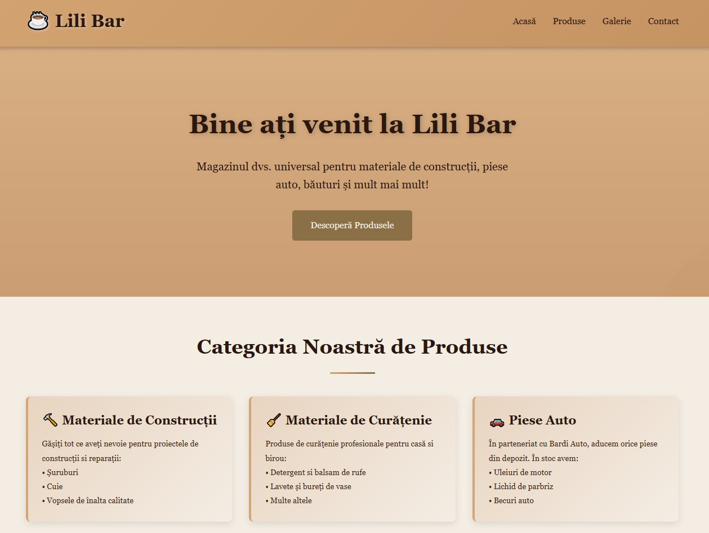
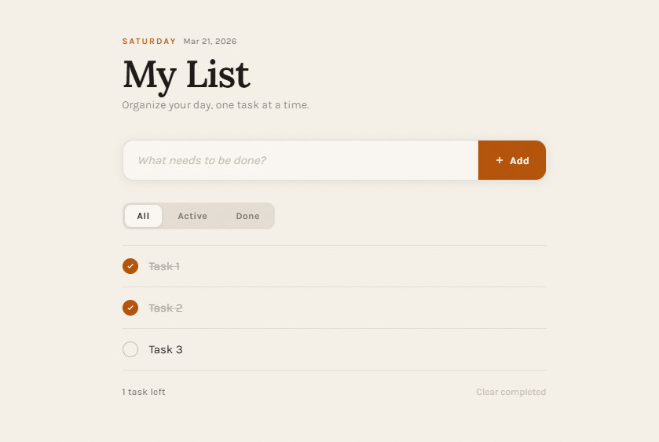
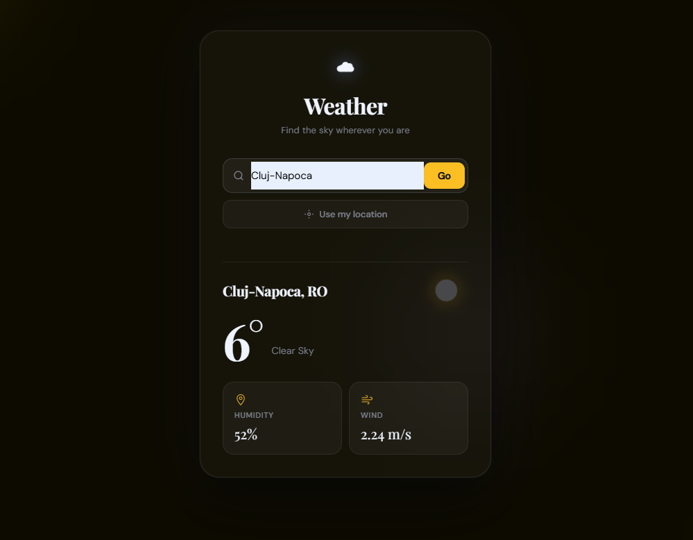
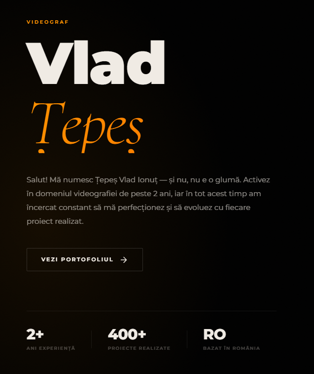

Frontend Developer
I build responsive and user-friendly web interfaces using HTML, CSS, JavaScript, and React. Right now, I’m focused on improving my portfolio, strengthening my frontend fundamentals, and preparing for my first role in web development.
These projects reflect my progress as a frontend developer, with a focus on responsive layouts, cleaner UI structure, and practical frontend functionality.

A responsive coffee shop website focused on visual branding, clear layout structure, and a smooth browsing experience built with HTML, CSS, and JavaScript.

A responsive task management app built with HTML, CSS and JavaScript. Users can add, edit, complete, delete and filter tasks, with persistent data stored in localStorage.

A responsive weather application that fetches real-time data from an external API. Includes city search, geolocation support, dynamic background based on weather conditions, loading states and error handling.

A professional videography portfolio built for Vlad Țepeș, showcasing work across medicine, real estate, and events. Features lazy-loaded video previews, touch-friendly mobile interactions, and scroll reveal animations.
I completed a Frontend Web Development course and I’m now continuing to learn with a clear goal: becoming job-ready and starting my career as a frontend developer.
My current focus is building stronger portfolio projects that show responsive design, JavaScript interactivity, API usage, and better UI implementation.
I’m working step by step to turn my learning into practical, visible progress through real projects.
Since I’m at the beginning of my frontend career, I use my portfolio to show progress, consistency, and the practical skills I’m building through projects.
Built my foundation in HTML, CSS, JavaScript, responsive layouts, and modern frontend structure.
I’m actively improving this portfolio by adding better projects, stronger UI decisions, and more realistic frontend functionality.
Right now I’m focused on JavaScript practice, API-based projects, cleaner code organization, and moving toward stronger React projects.